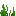
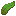

The Capybara is a passive and tamable animal added by Earthify. It is the world's largest rodent and enjoys spending most of its time relaxing near rivers, lakes, and wetlands.
Capybaras are calm, friendly creatures that naturally wander close to water. They are excellent swimmers and can easily travel through rivers and ponds. Unlike most passive animals, they can become loyal companions after being tamed.
Behavior
Wild capybaras peacefully roam grassy areas and riverbanks, occasionally entering the water to swim. They naturally follow tempting food and can breed using items from ModItemTags.CAPYBARA_FOOD.
Players can tame a capybara by feeding it a Glistering Melon Slice. Each feeding has a chance to successfully tame the animal. Once tamed, the capybara becomes much healthier, follows its owner, and can be ordered to sit or stand.
Capybaras automatically stand up if they enter water while sitting, allowing them to swim freely. Baby capybaras follow their parents until they mature, while adults remain peaceful and avoid combat whenever possible.
Taming
| Taming Item | Glistering Melon Slice |
| Taming Chance | 33% |
| Can Sit | Yes |
| Follows Owner | Yes |
| Can Be Healed | Using Capybara Food |
Behavior Features
| Passive | ✔ |
| Tamable | ✔ |
| Breedable | ✔ |
| Excellent Swimmer | ✔ |
| Can Sit | ✔ |
| Follows Owner | ✔ |
| Follows Parents | ✔ |
| Panics When Hurt | ✔ |
| Spawns in Water | Possible |
Statistics
| Health | 15 HP (7.5 ♥) |
| Tamed Health | 40 HP (20 ♥) |
| Movement Speed | 0.20 |
| Follow Range | 20 Blocks |
| Step Height | 1 Block |
| Swimming Ability | Excellent |
Mob Drops
|
 Seagrass |
Possible |
|
 Kelp |
Possible |